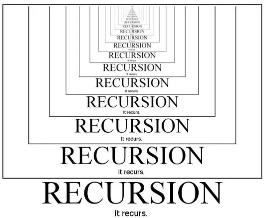
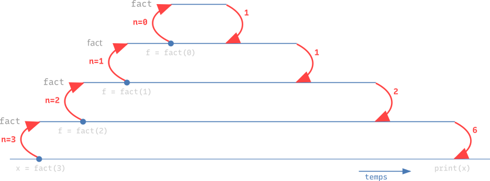
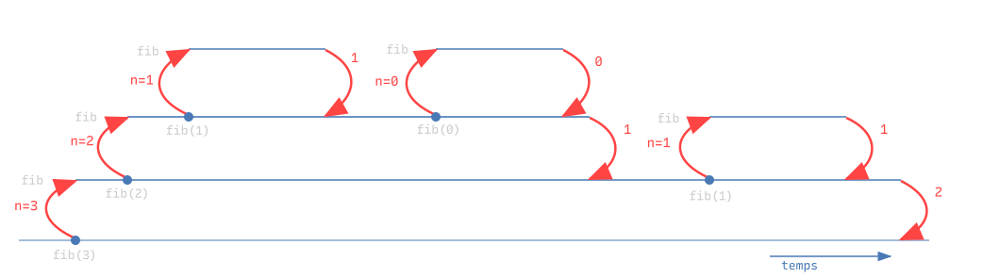

def fact(n):
if n == 0:
return 1
return n * fact(n - 1)
print(fact(5))120Cours 6
Une fonction récursive résout un problème en résolvant un ou plusieurs sous-problèmes du même type.
On écrit alors des fonctions qui s’appellent elles-mêmes.
L’idée est de décomposer le problème en sous-problèmes plus petits, de les résoudre récursivement, puis de combiner leurs solutions pour obtenir la solution du problème original. On parle du paradigme « diviser-pour-régner ».

Pour \(n \in \mathbb{N}\), la factorielle de \(n\) est définie comme \[n! = n \cdot (n-1) \cdots 2 \cdot 1 = \begin{cases} n \cdot (n-1)! &\text{si}~n \geq 1\\ 1 &\text{si}~n = 0\end{cases}\]
On peut calculer la valeur de \(n!\) à partir de celle de \((n-1)!\), c’est-à-dire ramener la résolution du problème pour l’entrée \(n\) à la résolution du problème pour l’entrée \(n-1\).
Cela suggère la fonction suivante :
def fact(n):
if n == 0:
return 1
return n * fact(n - 1)
print(fact(5))120fact calcule la factorielle de \(n\) avec \(n\) appels récursifs.def g(x):
return x**2
def f(x, y):
s = x + y
return g(s) + 1
x = f(2, 3)
Pour mieux comprendre : Recursion Visualizer, Python tutor.
def fact(n):
if n == 0:
return 1
f = fact(n - 1)
return n * f
x = fact(3)
print(x)6
Schématisons la structure d’une fonction récursive (avec un appel récursif).
def fonction(entrée):
if condition du cas de base:
return solution directe
résultat = fonction(entrée plus petite)
return combiner(entrée, résultat)def fact(n):
if n == 0:
return 1
f = fact(n - 1)
return n * fla condition du cas de base le cas de base l’appel récursif
Pour \(n \in \mathbb{N}\), le \(n\)ème nombre de Fibonacci est défini comme \[f_n = \begin{cases} f_{n-1} + f_{n-2} &\text{si}~ n \geq 2\\ 1 &\text{si}~ n = 1\\ 0 &\text{si}~ n = 0\end{cases}\]
On peut ramener la résolution du problème pour l’entrée \(n\) à la résolution du problème pour les entrées \(n-1\) et \(n-2\) :
def fib(n):
if n == 0:
return 0 # cas de base
if n == 1:
return 1 # cas de base
a = fib(n - 1) # appel récursif
b = fib(n - 2) # appel récursif
return a + b
for n in range(10):
print(fib(n))0
1
1
2
3
5
8
13
21
34En général, une fonction peut effectuer un nombre quelconque d’appels récursifs. Ici, chaque appel de fib en engendre deux autres (sauf pour les cas de base).
def fib(n):
if n == 0:
return 0
if n == 1:
return 1
a = fib(n - 1)
b = fib(n - 2)
return a + b
print(fib(3))

On peut prouver que pour l’entrée \(n\) le nombre d’appels récursifs de fib est exponentiel en \(n\) (définition formelle dans quelques semaines).
Une fonction récursive avec deux cas de base et deux appels récursifs :
def fonction(entrée):
if condition du 1er cas de base:
return solution directe 1
if condition du 2e cas de base:
return solution directe 2
a = fonction(entrée plus petite)
b = fonction(autre entrée plus petite)
return combiner(entrée, a, b)def fib(n):
if n == 0:
return 0
if n == 1:
return 1
a = fib(n - 1)
b = fib(n - 2)
return a + bles conditions des cas de base les cas de base les appels récursifs
Remarque. Une fonction récursive peut avoir un nombre quelconque de cas de base et d’appels récursifs.
On peut distinguer la résolution récursive d’un problème (qui construit la solution à partir de solutions à des sous-problèmes) et la résolution itérative (qui construit graduellement la solution à l’aide de boucles).
Au cours 2, nous avons calculé la somme des nombres de \(1\) à \(n\) avec une boucle. Voici cette fonction itérative, pour un entier \(n\) strictement positif :
def somme(n):
s = 0
for i in range(1, n + 1):
s = s + i
return s
print(somme(10))55Peut-on écrire une fonction récursive somme_rec qui calcule cette même somme ?
Oui, mais il faut d’abord exprimer cette somme de manière récursive.
Pour \(n\) entier strictement positif, \[\sum_{i=1}^{n} i = \begin{cases} 1 &\text{si}~n = 1\\ \sum_{i=1}^{n-1} i + n &\text{si}~n > 1\end{cases}\] somme_rec(n) doit donc retourner…
1 si \(n = 1\) (cas de base),somme_rec(n-1) + n sinon (appel récursif).def somme_rec(n):
if n == 1:
return 1
return somme_rec(n - 1) + n
print(somme_rec(10))55Programmons un tic-tac-toe pour deux joueurs, 'X' et 'O', qui jouent à tour de rôle en choisissant chacun une case libre au hasard. Le premier qui aligne trois symboles gagne.
None (case libre), 'X' ou 'O'.P[i][j] est la case de la ligne i et de la colonne j.n quelconque, qu’elles retrouvent avec n = len(P). Ici, n = 3.Le plateau en mémoire :
P = [['X', 'O', None],
[None, 'X', None],
['O', None, None]]Le plateau affiché :
| X | O | |
| | X | |
| O | | || Fonction | Rôle | Retourne |
|---|---|---|
transposer(T) |
transpose un tableau (cours 5) | le tableau transposé |
plateau_vide(n) |
crée un plateau \(n \times n\) de cases libres | le plateau |
afficher(P) |
affiche le plateau | rien |
jouer_random(P, joueur) |
choisit une case libre au hasard et y pose le symbole de joueur |
rien |
gagnant(P, joueur) |
joueur a-t-il rempli une ligne, une colonne ou une diagonale ? |
un bool |
plein(P) |
toutes les cases sont-elles prises ? | un bool |
Remarque. jouer_random ne retourne pas un nouveau plateau : elle modifie la liste reçue, que le programme principal désigne lui aussi.
partie(n) crée un plateau de côté n et enchaîne les tours jusqu’à la victoire ou au match nul.
créer un plateau vide, ainsi que les variables joueur et tour
tant que le plateau n'est pas rempli :
afficher le plateau
déterminer le joueur
faire jouer le joueur
si le joueur a gagné : c'est fini (return)
sinon : passer à la prochaine itération
sortir de cette boucle (sans return) signifie un match nul.Pour qu’un humain puisse jouer au tic-tac-toe, le programme doit pouvoir lui demander sa case : c’est ce que permet input.
La fonction input permet de demander une valeur à l’utilisateur pendant l’exécution.
input(message) affiche message, attend que l’utilisateur tape une réponse et appuie sur Entrée, puis return cette réponse.
name = input("Comment t'appelles-tu? ")
s = "Quel âge as-tu, " + name + "? "
age = int(input(s))
print("Il te manque", 100 - age, "ans pour être centenaire!")La valeur retournée est toujours une str, même si l’utilisateur tape un nombre. Pour calculer avec, il faut la cast : int(input(...)) ou float(input(...)).
Remarque. Si la réponse n’est pas l’écriture d’un nombre, int et float produisent une erreur.